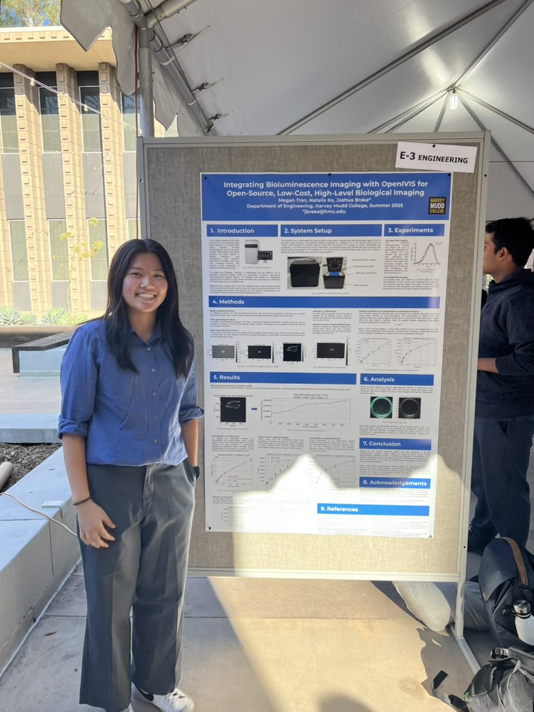

OpenIVIS Research
In Summer 2025, I had the opportunity to do research in the Harvey Mudd College Biophotonics Lab. My project, OpenIVIS, focused on developing low-cost optical imaging systems using consumer-grade hardware like the Raspberry Pi, with the goal of making advanced imaging tools more accessible for research in biology and medicine.

